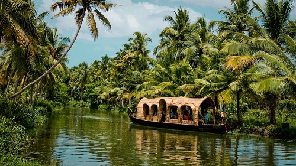
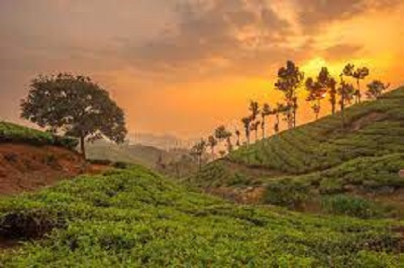

Kerala, also known as "God's Own Country", is a state located in the southwestern region of India. It is known for its serene beaches, tranquil backwaters, lush green forests, exotic wildlife, majestic hills, and picturesque waterfalls.
Kerala is also famous for its rich cultural heritage, including traditional dance forms, music, and cuisine. The state is a melting pot of different religions, languages, and cultures, which makes it a unique and fascinating destination for tourists from all over the world.
Some of the popular tourist destinations in Kerala include:
Whether you are a nature lover, an adventure seeker, or a culture enthusiast, Kerala has something to offer for everyone. Come and experience the magic of God's Own Country!